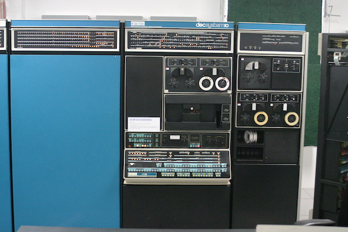
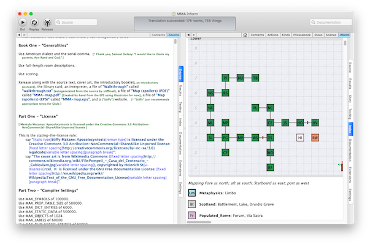
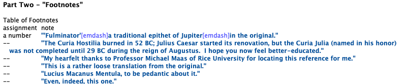

Inform 7
Adam Thornton
Created: 2025-09-17 Wed 05:35
A brief introduction to the Inform 7 text adventure programming language
Adam Thornton, April 2020
https://github.com/athornton/i7-talk-2020 (PDF)
CC BY-NC 4.0
Inform 7
by Graham Nelson, after Don Knuth
…and Crowther and Woods, and Anderson, Blank, Lebling, and Daniels
…and Roberts and Tessman and Plotkin
…and a host of others.
Parser-based Text Adventures
For a brief shining moment, the most popular form of computer entertainment.

Get offa my lawn!
…and a very, very long post-commercial life (1990-present)…
"Interactive fiction."
…frequently used to storyboard games that will have expensive assets.
Good way to prototype puzzle design, for instance.
How were these written, historically?
Adventure: FORTRAN/PDP-10/TOPS-10

http://www.literateprogramming.com/adventure.pdf may be the best paper ever written about a computer program.
(KI-10 Picture from Wikipedia user Gah4, CC BY-SA 4.0)
Zork: MDL/PDP-10/ITS
https://github.com/historicalsource/zork
Ported to FORTRAN by Bob Supnik. That's the one you've played.
Infocom: ZIL/PDP-10/TOPS-20
https://github.com/historicalsource/
The Z-Machine was the magic that enabled easy porting and very big (for the time) games.
Post-Infocom: AGT, TADS
Inform: Graham Nelson, 1993 -> Inform 6, 1996
- Compiles to Infocom Z-machine.
- https://en.wikipedia.org/wiki/Inform#The_Inform_6_programming_language
Inform 7: Graham Nelson, 2006
Compilation Target
Z-machine: 16-bit virtual machine
What's it like?
The experience of writing an adventure game should be much like the experience of playing one.
Designed for nonprogrammers:
Graham on Inform 7 design:
Literate Programming
Declarative
Hello, World
"Hello World" by Adam Thornton.
Hello World is a room.
Note that identifiers can have spaces (and other odd characters) in them.
IDE is an integral part of the intended experience

But not, strictly speaking, a necessary one.
I maintain the Linux CLI port.
However, the IDE is a joy to use.
How suitable is it for writing text adventures?
I have written a 160,000 word game in it.
Blue Lacuna is about twice that size(!)
Far, far more output text than any commercial text adventure ever.
Find Inform 7 at http://inform7.com
Not Open Source yet (although it was announced for last fall)….
Inform 7 itself is a very large literate program, written in Inweb (a superset of a subset of CWEB)
https://github.com/ganelson (someday)
What does it simulate?
A physical world
Rooms are topologically connected, there are objects, some of which are mobile…
But more like a stage-set than a physical simulation
The language encourages this: objects are "off-stage", "remove X from play," and sense-modelling and object-player interaction are primitive. Cf. TADS 3.
Language features
Locations defined declaratively, implicitly transitive.
Scotland is a region. Edinburgh, Glasgow, and Aberdeen are rooms in Scotland.
Aberdeen is northeast of Glasgow. Edinburgh is east of Glasgow.
Glasgow is a room. "Gray and grim." [ This sets the "initial appearance" property. ]
Populating the world is declarative:
The wooden table is a supporter in the kitchen. "A wobbly wooden table rests unsteadily on the floor." The description is "The table looks unsteady."
Understand “wobbly” and “unsteady” as the table. [ Synonyms ]
Some butter is on the wooden table. The butter can be edible. It is edible. [ Properties ]
Adjectives used in play and in world-construction.
[ Define a new kind, and then use it as an adjective. ]
Shininess is a kind of value. The shininesses are shiny and dull.
A coin has a shininess. A coin is usually dull.
The Bank is a room. The penny is a shiny coin in the Bank.
Defining new actions
Understand the command "feed" as something new. Understand "feed [something preferably held] to [something]" as feeding it to. Understand "feed [something] [something preferably held]" as feeding it to (with nouns reversed).
Feeding it to is an action applying to two things.
Carry out feeding it to:
if the second noun is not a person, instead try inserting the noun into the second noun;
if the second noun is the player, instead try eating the noun;
instead try giving the noun to the second noun.
Rule-based
The most important ones are "before", "instead", "after", and "check <action>", "carry out <action>", "report <action>".
Instead of a suspicious person (called the suspect) burning something which is evidence against the suspect when the number of people in the location is at least two, try the suspect going a random valid direction.
[ "Instead" is the rulebook name; "(called the suspect)" creates a scoped variable for reference within the same rule. "Try" kicks off a new action and all its rulebooks. "Valid" is an adjective applying to the kind "Direction". ]
Implicit loop variables:
For printing a locale paragraph about a thing (called the item) (this is the forcibly set personal pronoun from items on supporters rule):
if the item is a supporter and the item does not enclose the player
begin;
repeat with the possibility running through things on the item
begin;
if the possibility is a woman, forcibly set the female pronoun from the possibility;
if the possibility is a man, forcibly set the male pronoun from the possibility;
if the possibility is a neuter animal, forcibly set the neuter pronoun from the possibility;
end repeat;
end if;
continue the activity.
You can also, if you prefer, use Python semantic indentation rather than "begin/end".
Tables take the role of structs.

Lists support apply, filter, and reduce…but not lazy evaluation.
Dimensional analysis (what?)
"Equation Playground" by Adam Thornton
Part Zero - Definitions
Include Metric Units by Graham Nelson.
Part e - Equations
Equation - Volume of a square parallelepiped
V=hl^2
Where V is a volume, h is a length, and l is a length.
Equation - Area of a square
A=l^2
Where A is an area and l is a length.
Part pi - Objects
Classroom is a room
The infernal prism is a thing in Classroom. It is fixed in place.
Carry out examining the infernal prism:
Let V be a random volume between 10 cu m and 1000 cu m;
Let A be a random area between 10 sq m and 100 sq m;
let l be given by the area of a square;
let h be given by the volume of a square parallelepiped;
say "The infernal prism shifts again. Now its height is [h]. Somehow you know its volume is [V] , so the side of its base must be [l] and the area of its base [A].";
stop the action.
A more traditional programming approach to I7:
Ron Newcomb, http://www.plover.net/~pscion/Inform%207%20for%20Programmers.pdf
May help impedance-match if you're more used to coding than writing.
Changes coming in the open-source version, whenever that may be
Two of Graham's talks cover a lot of this
http://inform7.com/talks/2018/06/09/london.html http://inform7.com/talks/2019/06/14/narrascope.html